Dieses ist die Übersicht über die interessantesten Neuerungen bzw. Änderungen in FreeCAD seit der letzten Version. Siehe hier für die vollständige Liste der Änderungen.
Ältere Versionen: 0.12 - 0.11
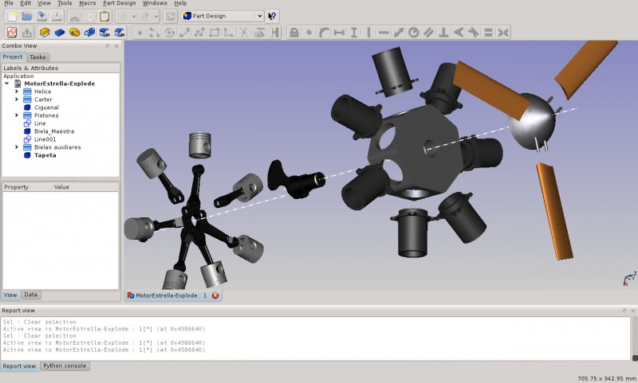
entworfen mit FreeCAD von psicofil
Übersicht
- Color preferences - bevorzugte Farb-Einstellungen: die guten alten grauen Oberflächen mit schwarzen Rändern aus der FreeCAD-Voreinstellung sind langweilig geworden? Nunmehr ist es möglich, diese Einstellungen in den Benutzer-Einstellungen (Display -> Color / Anzeige -> Farben) zu ändern, zusammen mit einigen anderen voreingestellten Farben.
- Alignment - Ausrichtung: zwei Oberflächen können mit diesem Werkzeug, das im Bearbeiten-Menü zu finden ist, unter Verwendung von bis zu drei Punkten zueinander ausgerichtet werden.
Arbeitsbereich Zeichnungsableitung
- Clip feature - Schnitt - Werkzeug: ein neues Objekt Drawing Clip (Schnitt in Zeichnung) erlaubt, Objekt-Ansichten innerhalb rechteckiger Schnitte auf Zeichnungs-Seiten zu plazieren.
- Editable titleblocks - bearbeitbare Überschriften : beim Anlegen einer Zeichnungs-Vorlage Drawing templates, ist es nun möglich, Text zu erstellen, der nachträglich geändert werden kann. Dieser Text ist dann direkt in FreeCAD änderbar.
- Annotation feature - Anmerkungs-Werkzeug: ein neues Objekt Drawing Annotation , um einfach und schnell Text-Blöcke auf einer Zeichnungs-Seite einzufügen.
- Orthographic Views - rechtwinklige Ansicht: ein neues Werkzeug Drawing Orthographic Views erlaubt das Erzeugen mehrerer Ansichten, die zueinander ausgerichtet sind, entsprechend der Projektion.
- Browser preview - Betrachter Vorschau: da durch den internen Qt SVG-Betrachter nicht immer alle SVG-Möglichkeiten unterstützt werden, erlaubt diese Taste zu überprüfen, wie eine Seite im webkit-Betrachter aussehen würde, der das SVG-Format vollständig unterstützt. Das ist provisorisch, bis wir wirklich mit dem SVG-Betrachter zum webkit wechseln...
- DXF export - DXF-Ausgabe: es ist nun möglich, eine Seitanansicht direkt als DXF-Datei auszugeben.
- Einige Fehler-Korrekturen erlauben nun das Verändern der Größe (Skalieren) beim Drucken von Seiten.
Arbeitsbereich parametrischer Entwurf
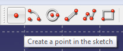
Punkte können nun im Entwurf zugefügt und als Element verwendet werden.
- Sketch Origin - Entwurfs-Ursprung
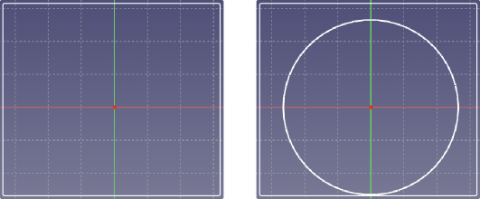
Der Benutzer kann nun den Entwurfs-Ursprung (bzw. Koordinaten-Ursprung für den jeweiligen Entwurf, welcher als Kreuzung einer horizontalen und einer vertikalen Urpsrungs-Linie angezeigt wird) zur Definition von Geometrie und (Entwurfs-)Achsen verwendet werden.
- Tangentialität und Rechtwinkligkeit als Bedingungen für Bogen und Kreise
- Bedingungen, die auf externe (projizierte) Geometrie bezogen sind
- verbesserte Berechnung (Zählung) der Freiheitsgrade des Entwurfs
- Symmetrie-Bedingung bezogen auf einen Symmetrie-Punkt (Mittelpunkt-Bedingung)
- Verbesserte Maß-Beschriftung und Bedingungs-Darstellung:
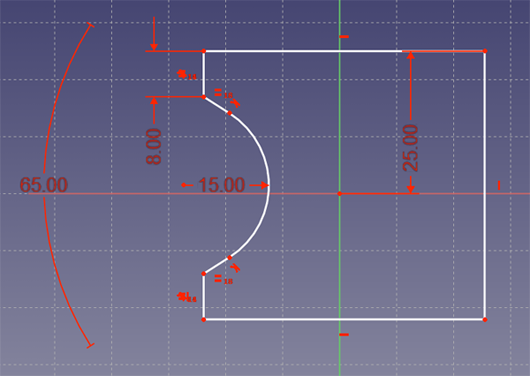
- Jede Bedingungs-Beschriftung (einschließlich Pfeile) wird automatisch entsprechend der (tatsächlich angezeigten) Größe der Szene in der 3D-Ansicht vergößert bzw. verkleinert
- die Bemaßungs-Beschriftung für Länge, Länge in X-Richtung, Länge in Y-Richtung und Radius kann nun mit mehr Möglichkeiten freier positioniert werden.
- kleiner Verbesserungen betreffend übereinander liegender Bedingungs-Anzeigen (-Darstellungen) und Korrektur von Fehlern, die Hängen verursachten.
- Bemaßungs-Beschriftungs-Text wird (ebenfalls) "von hinten" (spiegelverkehrt) angezeigt, wenn eine Ansicht von der Rückseite gewählt ist.
- Vollständig definierte Skizzen werden nun grafisch hervorgehoben:
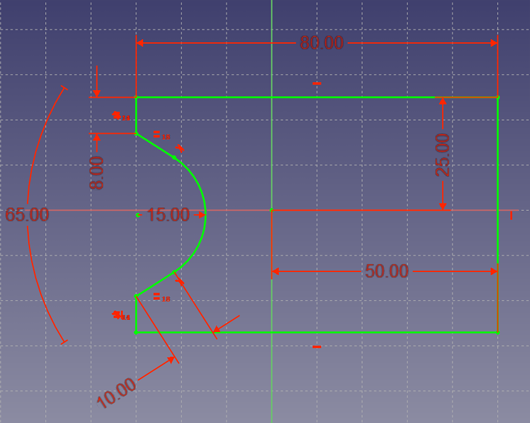
- Rubber band selection - rechteckige Auswahl:
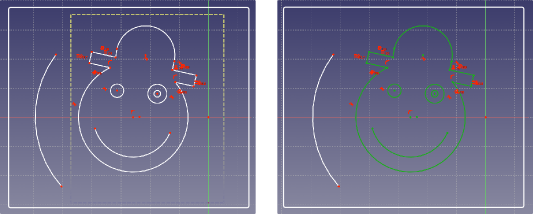
Geometrie-Elemente können mit einer rechteckigen Auswahl (Begrenzung) ausgewählt werden, in dem diese Auswahl erzeugt wird durch das Aufziehen eines Rechtecks außerhalb geometrischer Elemente - zweier Punkte im Hintergrund.
- erweiterte Funktion des Polylinie - Werkzeugs: wenn die Taste m gedrückt wird, kann zwischen Bogen- und Linien-Erzeugung umgeschaltet werden sowie zwischen (jeweilig) tangentialen und rechtwinkligen Übergängen zum (jeweils) vorhergehenden Element / Segment.
- Projeziere Skizze auf Fläche ist ein neues Werkzeug um eine existierende Skizze auf eine gewählte Fläche eines Körpers zu projezieren (oder erneut zu projezieren). Dies ermöglicht, diese Skizze für weitere Operationen wie etwa "Tasche" oder "Block" zu verwenden.
- kleine Verbesserungen:
- Wenn Geometrie erzeugt wird, werden Hilfe-Texte "tool-tips" in der Nähe des Cursers (Zeigers) angezeigt.
- Sketch view which sets the 3D view perpendicular to the sketch plane has now an icon in the Sketcher toolbar.
Modul freier Entwurf
- Zustand Aufgabe: der Zustand "Aufgabe-Ansicht" des Arbeitsbereichs Entwurf ist nun die Voreinstellung.
Keine Sorge, wenn Sie die Werkzeugleiste mögen, ist diese noch in der Entwurfs-Einstellungen verfügbar.
- DXF-Import: der DXF-Import unterstützt nun Punkte (welche zu Draft Point umgewandelt werden) und Linienzüge (die in Draft Wire umgewandelt werden)
- nagelneues Fang-System: das Objekt-Fang System des Arbeitsbereiches Entwurf wurde praktisch von Grund auf neu geschrieben.
Es ist nun viel leichter zu erweitern und in anderen Scripten und Modulen zu benutzen, hat neue Darstellungen mit kleinen Bildern, die verschiedenen Fang-Modi darstellen sowie eine Werkzeugleiste, die das Umschalten einzelner oder aller Fang-Einstellungen mit einem Mal erlaubt.
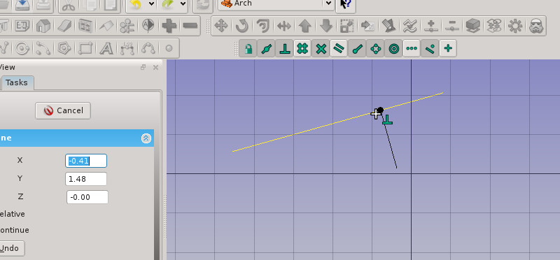
- verbesserte Bedingungs-Bearbeitung: Wenn 3D-Punkte angegeben werden,
die nicht vom vorhandenen Shift-constraining erfasst sind, können Sie die Freiheitsgrade in X, Y oder Z Richtung durch Drücken der entsprechenden Tasten X, Y or Z einschränken.
Erneutes Drücken der Taste schaltet die Einschränkung wieder aus.
- freier Entwurf <-> parametrischer Entwurf Umwandlung:
Der Arbeitsbereich Entwurf hat nun ein neues Werkzeug Draft2Sketch, mit dem ausgewählte freie (2D-) Entwürfe (oder ebene Flächen-Objekte) in parametrische Entwürfe umwandelt und umgekehrt.
- Clone tool - Werkzeug abhängige Kopie: erzeugt abhängige Kopien der ausgewählten Objekte. Wenn das Original verändert wird, wird die abhängige Kopie automatisch aktualisiert. Die abhängige Kopie kann verschoben, gedreht und in der Größe verändert werden.
- SVG Import-Filter: der SVG-Import-Filter hat nun eine deutlich bessere Unterstützung für Bezier-Kurven. Globale Festlegungen für die Einheiten des Benutzers werden nun beachtet und die Geometrie wird sauber in Millimeter skaliert.
Unterstützung für neue Elemente wie Ellipsen und abgerundete Rechtecke wurde hinzugefügt. Der parser wurde überarbeited und ist nun in der Lage, mit Adobe Illustrator-Pfaden umzugehen.
- abgerundete Ecken: einige Entwurfs-Elemente (Wires, Rectangles und Polygons) verfügen nun über eine Eigenschaft Rundungs-Radius, welche ihre Ecken mit dem angegebenen Radius verrundet.value.
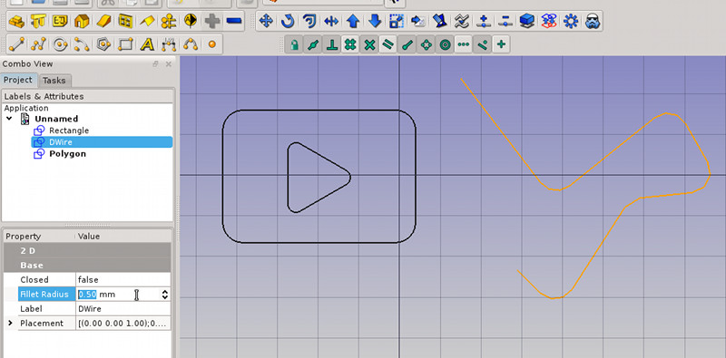
- 2D Objekt-Ansicht: das neue Werkzeug Shape2D-Ansicht erlaubt das schnelle Einfügen einer 2D-Ansicht eines ausgewählten Objekts in das Dokument. Sie können den Projektions-Vektor angeben.
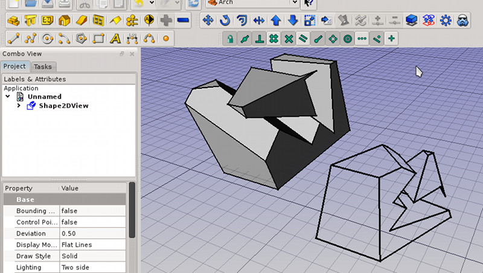
Arbeitsbereich Architektur
- Verbindung der Entwürfe: Die Arbeitsbereiche Architaktur und freier Entwurf sind nun eng miteinander verbunden.
Die Werkzeuge des Arbeitsbereiches Architektur verwenden das Entwurf Fang System und alle Werkzeuge des Arbeitsbereiches freier Entwurf sind im Arbeitsbereich Architektur verfügbar.
Praktisch, wenn Sie es mögen, könne Sie (die Anzeige des) den Arbeitsbereich(es) freier Entwurf vollständig abschalten
(Preferences -> Draft -> Hide the Draft workbench)
wurde weitgehend erweitert und umfasst nun einen Entwurfs-Modus (Zustand) der eingeschaltet wird, wenn der Knopf "Wand" gedrückt wird, ohne dass eein Objekt ausgewählt wurde.
Dieser Zustand erlaubt es, Wände mit einfachen Linien zu zeichnen.
Weiterhin werden Wände nun automatisch verbunden, wenn Sie den Objekt-Fang-Modus auf eine vorhandene Wand anwenden.
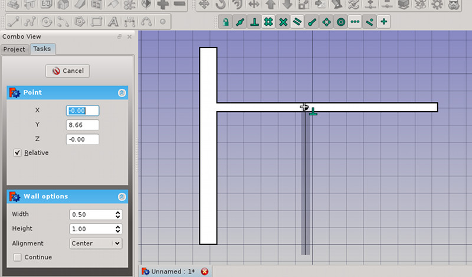
- neues Dach-Werkzeug: ein neues Dach-Werkzeug ist nun im Arbeitsbereich Architektur verfügbar.
Dieses Werkzeug ermöglicht, schnell geneigte Dächer aus ausgewählten Flächen zu erzeugen.
- neues Fenster-Werkzeug: Fenster werden nun direkt auf einer ebenen Fläche erzeugt, auf der sich ein oder mehrere Linienzüge wie Rechtecke oder parametrische Entwürfe befinden. Wenn die Form direkt auf die Wandfläche gezeichnet wurde, wird das (neue) Fenster automatisch als Öffnung in die Wand geschnitten.
- Neues Schnitt-System: es ist nun sehr einfach, 2D-Pläne, Schnitte und Aufrisse aus Ihrem Modell zu erzeugen: erzeugen Sie ein Section Plane Objekt, richten Sie es Ihren Vorstellungen entsprechend aus und bearbeiten es, so dass es die Objekte enthält, die enthalten sein müssen und Sie sind fertig!
- Neue Oberflächendarstellung für Festkörper: zusätzlich zu der gegenwärtig verwendeten, 2D-Drahtkörper-Öberflächen-Darstellung, welche aus OpenCasCADe stammt und die vom Arbeitsbereich Zeichnungsableitung / Drawing verwendet wird, verfügt der Arbeitsbereich Arch nun über eine neue 2D-Öberflächendarstellung, die in der Lage ist, die dargestellten Flächen in ein SVG -Zeichenblatt auszugeben, was deutlich bessere 2D-Ansichten ergibt.
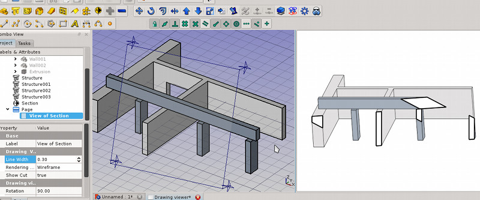
Der Arbeitsbereich Arch kann nun IfcOpenShell IfcOpenShell benutzen, wenn das auf Ihrem System installiert ist. Das erlaubt einen leistungsfähgeren IFC-Import, bei dem garantiert der vollständige Inhalt der IFC-Datei importiert wird.
- Neue Gebäude- und Geschoss-Objekte: Gebäude und Geschosse sind nun Gruppen. Damit können Sie nun Objekte daraus per einfachen drag&drop aus der Baum-Ansicht hinzufügen und entfernen.
- Neues Achsen-System: ein neues Merkmal (bzw. Werkzeug) wurde eingeführt, das es erlaubt, schnell komplexe Achsen-Systeme anzulegen. Diese Achsen können zu Struktur Objekten hinzugefügt werden, so dass sie automatisch auf die Gitter-Knoten aufspannen (anpassen).
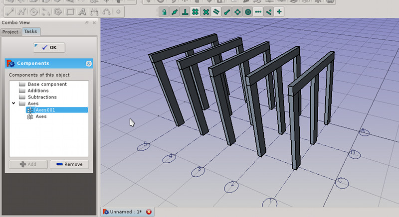
- Arch-Objekte aus Netzen: Wände and Strukturen können nun direkt aus Netzen erzeugt werden, vorausgesetzt, das Netz ist geschlossen, als Festkörper definiert und alle Kanten sind räumlich manifold. Das erlaubt die sehr schnelle Umwandlung von Geometrie, die von anderen Anwendungen wie blender in gültige Arch-Objekte importiert wird.
Arbeitsbereich Part
- Oberfläche verfeinern ist ein neues Werkzeug, das Oberflächen nach einigen Operationen auf eine Fläche bereinigt. Das Werkzeug kann in den Benutzer-Einstellungen so eingestellt werden, dass es automatisch nach Booleschen Operationen aufgerufen wird
dieses Werkzeug ist in der Lage, einen komplexen Satz von Oberflächen oder Festkörper-Flächen entlang einer Reihe von parametrischen oder freien Entwürfen (z.B. offenen oder geschlossenen Linienzügen) zu entsprechenden Freiformflächen auszuformen.
dieses Werkzeug ist in der Lage, einen komplexen Satz von Oberflächen oder Festkörper-Flächen entlang einer Reihe von parametrischen oder freien Entwürfen (s.o.) und einer (weiteren) Führungskurve (parametrischer oder freier Entwurf oder eine Kante) zu ziehen.
- Oberflächen-Assistent und Primitiv-Erzeugung sind nun in der Werkzeugleiste Part für schnellen Zugriff verfügbar.
Arbeitsbereich Part Design
- Aufdicken und Tasche sind nun dank weiterer Parameter wie Dicke bis Nächstes/Letztes, bis zu Fläche, zwei Richtungen und symmetrisch zu Fläche leistungsfähiger.
- Fase und Rundung erhielten eine Auffrischung: es ist nun erlaubt, eine Fläche auszuwählen, alle äußeren und inneren Kanten der Fläche werden bearbeitet.
- Drehung: eine Konstruktionslinie kann nunmehr als Drehachse verwendet werden.
- Neues Werkzeug Nut / Ringnut: schneidet durch Drehen einer Skizze ein Profil aus Ihrem Festkörper.
- Lineare Wiederholung. Zirkuläre Wiederholung und Mehrfache Wiederholung Werkzeuge erlauben die Ausrichtung und verteilte Wiederholung von Auftragungen (pads) und Taschen (Aussparungen) auf / in einem Teil.
- Ein Wellen-Assistent hilft Ihnen, Wellen zu entwerfen.
Arbeitsbereich Schiffs-Entwurf
- Neuer Arbeitsbereich Schiff
- New ship module
3D Maus
- Unterstützung für 3D Maus (Space-Ball und Space-Navigator) wurde der Windwos-Version zugefügt.
- Ein neuer Tab im Einstellungs-Dialog erlaubt die Feineinstellung Ihrer 3D-Maus enstprechend Ihrer Wünsche direkt aus FreeCAD
Arbeitsbereich OpenSCAD
- Dieser brandneue (experimentelle) Arbeitsbereich verschafft FreeCAD die Fähigkeit, OpenSCAD-Dateien zu importieren. Dieses Datei-Format ist sehr beliebt in der RepRap-Community und bei der digital designs sharing site (Webseite mit öffentlich verfügbaren 3D-Entwürfen) Thingiverse.
{kind=link}
{kind=link}
{kind=link}
{kind=link}
{kind=link}
{kind=link}
{kind=link}
{kind=link}
{kind=link}
{kind=link}
{kind=link}
{kind=link}